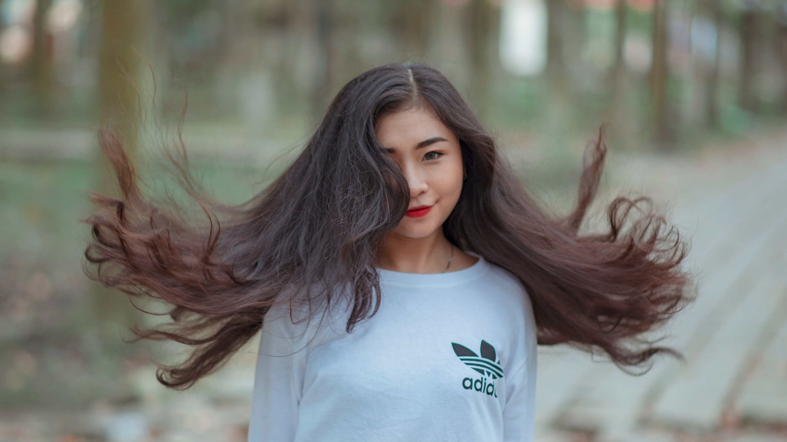
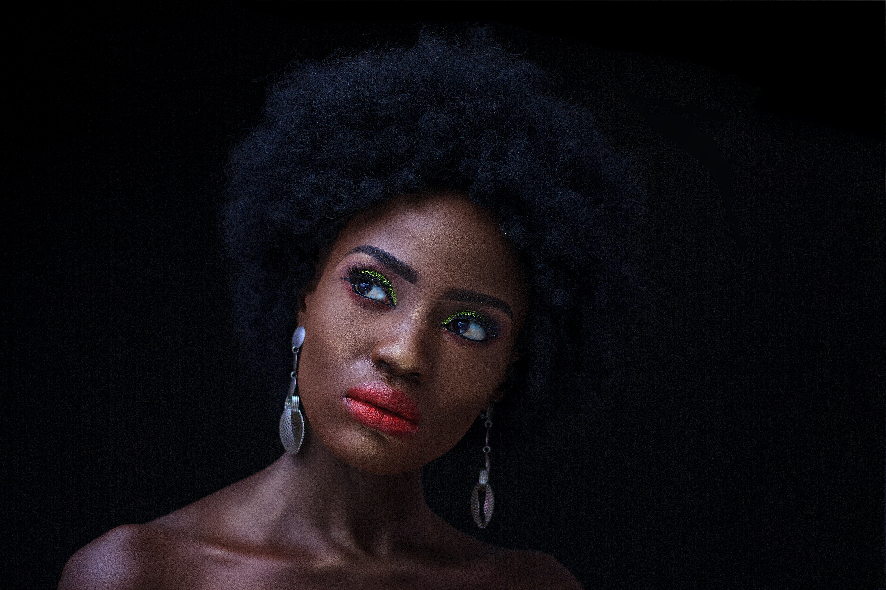

Human Hair Extensions for All Nationalities for 35+ Years
Hair Care
Congratulations, your bad hair days are finally over! With minimum care, you should be able to enjoy the benefits of your new hair for at least one year, depending on how you take care of it. At LA Hair we are forever looking for ways to help you get the greatest value for your money.
At LA Hair Extensions your human hair is selected based on your racial and ethnic origins. Therefore your human hair extensions hair care must be matched to your own hair type. Select your hair care instructions from the following: African: Relaxed Texture, Afro Curly Texture, Asian: Straight or Wavy Texture, Asian Curly. Caucasian: Silky Straight, Wet N Wavy and Body Wave. Mediterranean, India Indian, Latino: Curly, wavy or straight. The unique structures of each of these hair types require different products and different techniques for daily grooming, proper care and maintenance.
General Hair Care | Shampoo Hair | Caucasian, Straight, Body Wave | Asian | Afro, Afro Asiatic, Mediterranean, some Persians
Printable Hair Care Instructions
General Hair Care
All human hair must be shampooed and conditioned. With your new human hair extensions you will also need to know what not to do. Protect hair from perspiration, chlorine and salt water. If you are in or near salt water or chlorine coat your hair with Paul Mitchell’s “The Conditioner” before exposure. Do not let hair dry before brushing out any and all tangles, and shampoo ASAP after such exposure. Always use a good clarifying shampoo. Followed with the conditioner you can only find in L’Oreal do it yourself color kits. Call me for details before using this conditioner…follow up again with “The Conditioner” let dry before laying on it.
Caution:
Never sleep on wet and/or tangled hair. Always brush hair out and let hair dry, when hair is almost dry… Use Moisturizing oil (Moroccan, etc.) put in Genie Roll for straight and wavy hair. For Curly or Wavy use moisturizing cream or lotion, put in large braided(s) for curly hair .
Shampoo Hair

If your hair is dry use a moisturizing shampoo…avoid shampoos with a lot of alcohol. Always brush through to remove any tangles before shampooing. Use a Teflon tipped brush to brush hair thoroughly starting at the end, working upwards towards the scalp. Gently, lightly remove all tangles. Do not tangle hair during shampoo, scrub and clean the scalp, then pull fingers through the rest of the hair. Rinse with warm water.
Conditioning:
After shampoo use a good moisturizing conditioner (see suggested products). Leave conditioner on as long as you like A moisturizing conditioner can not/will not harm your hair. Rinse well with COLD water.
Care for Caucasian Straight and Body Wave Hair
All human hair needs oil. Because of its uniqueness Caucasian/European hair gets oil from the scalp. As a rule of thumb Caucasians must shampoo frequently, some even daily. This is very damaging to the hair, because shampoo removes oils “all hair needs oil”! So every time you shampoo the oil out, the scalp makes more. The result; you have a superfluous amount of oil in your hair, yet your hair feels dry and is damaged… especially if you color/bleach your hair. Shampoo contains detergent, which deters/ removes oil.
Shampoo your hair only as necessary. Remember all hair needs oil. So when your scalp produces too much oil, instead of shampooing it out, your new European hair, which now has no scalp, will absorb these excessive oils. Most of my clients find it necessary to shampoo only once or twice a week. This sometimes leaves oil in the crown area where there is no extension hair. In this case shampoo the area as needed for good hygiene. But shampoo the crown area only.… Tip: Use the ckitchen sink, by pulling only the top hair forward to shampoo the hair and clean the scalp. Use the veggie sprayer to rinse hair forward in sink.
Tip:
Cold water can be uncomfortable in the shower, so rinse with luke warm water and then…Just spray hair with cold water. You should shampoo at least once a week in cold weather, and no more than twice a week in hot weather. If lifestyle dictates more frequency…just use a conditioner like a shampoo. Do not use products high in alcohol content. Look for low or no sulfate products.
You may also use what ever hair care products you have already used successfully on you own hair. Do not experiment.
Other Suggestions:
- “The Conditioner” by Paul Mitchell. Other Product Suggestions Nexxus Humectress Moisturizing Shampoo and Conditioner (also see other Nexxus and Paul Mitchell products) available at Walgreens, Wal-Mart and Amazon.com… Kenra Professional Moisturizing Shampoo: Use as directed. For severely damaged hair…Call Me 404 252-5644 Caucasian Silky Straight / Body Wave & Indian Temple Wavy and Straight
- Use PM “The Conditioner (you must use this leave in conditioner for the 1st 10 days.) Use at night. Spray hair with warm water, just moisten…do not saturate. Apply “The Conditioner” to all of the hair. Use a comb or Teflon tipped brush to distribute conditioner evenly through-out the hair. If your hair is damaged or has been bleached apply slightly heavier on ends. Do not rinse out. This is a leave in conditioner. Put your hair in a “Genie Roll” and go to bed. After the 1st 10 days. Use this product as needed to prevent dryness. Do not over shampoo and don’t let your hair dry out
Caucasian: Curly and Wet N Wavy: : Follow the above routines. Use Moroccan Oils for sheen. Use fingers for styling ands curly ringlets…do not comb or brush. Can plat (braid) hair for additional volume and curl control.
Care for Asian Hair

You will know the type of hair you have, based on your race. Basically anyone who is not #510972 or black is Asian. Your hair could be curly, straight or wavy. This hair requires oil. Shampoo and condition as directed above. Use moisturizing products and avoid alcohol.
Grooming
You should use what ever products you have used (successfully) on your own hair or see my recommendations. Straight or Wavy hair: To add shine and relieve dullness in your Use an “Oil Sheen Spray” and/or natural oils like Moroccan, Coconut Oil etc.
Curly Hair
For curl definition use “Curl Activators, Curl Moisturizers, Curl Boosters, etc. These products will define your curls. Finish with a Finishing mist or oil sheen spray to make hair look rich and vibrant. These products are typically sold in the “Ethnic” hair care section in most stores, there are various brands to choose from. I prefer “Wave Neuveau” Moisturizing Finishing Lotion followed by their Moisturizing Finishing Mist. Spray hair with COLD water before using Finishing Lotions. This will help you avoid over use causing hair to be heavy and sticky. Use fingers to define your curl pattern(s) use products as directed. You may also try other manufactures curl grooming products, John Freeda or L’Oreal, and other manufacturers also make curl defining products, avoid products containing a lot of alcohol. This will dry the hair.
Care for Afro Hair (Including Afro Asiatic, Mediterranean, and Some Persians)

Relaxed, Perm Straight, Deep Wave, Brazilian, and Malaysian, Indian Temple. All of these hair types require oils to be added. Unlike Caucasians; these people(s) scalps sweat water and that causes dryness, often producing dry dandruff. If you have dry scalp especially with dandruff you must use natural oils as well as solid hair and scalp oils (grease) on your scalp at least twice a week in cold weather about once a week in hot weather or as needed.
Shampoo
Always use a moisturizing shampoo. Most shampoos made for Ethnics use natural oils instead of alcohol, once again they are found in a small “ethnic” area in the store. If these products are not readily available in your area there is always Amazon. Some manufacturers like Pantene and L’Oreal now make products for Afro hair, but most don’t.
Condition
Use a moisturizing conditioner for Black hair only after shampooing (others may have alcohol as their main ingredient). There are many Brands and products I do not recommend Revlon products. Use Paul Mitchell “The Conditioner” a leave in conditioner between shampoos to keep hair soft and pliant. At LA Hair we source the finest quality hair from around the globe, which allows us to match your extension hair to your own natural hair. We’ve been in this business since 1972 and have contacts in Europe, and India. We do not use processed Chinese hair. Our hair harvesters source hair from around the world. Our Blondes including Ash Blondes are from Germany (we are the source for ALL shades of blonde(s). Our Brunette hair comes from Italy. Our Afro hair comes from Portugal and Asian hair is from The Temples of India.